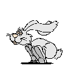
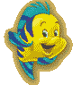
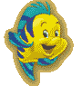
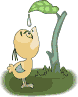

Para mi sobrina nieta Sarah
García Bueno
Para mi sobrina nieta Sarah
García Bueno

Érase una vez un conejito que quería huir de su casa a lo que su mamá naturalmente su opuso. Si te vas, le dijo, correré tras de ti y te cogeré porque tu eres mi conejito.
 El
conejito le respondió, pues me convertiré en pez
y
correré por los arroyos. Si te conviertes en pez, contesto su mamá, me convertiré en pescador
y te atraparé con mis redes.
El
conejito le respondió, pues me convertiré en pez
y
correré por los arroyos. Si te conviertes en pez, contesto su mamá, me convertiré en pescador
y te atraparé con mis redes.
Pues
me convertiré en pájaro dijo el conejito muy enfadado, y no podrás cogerme. Si te conviertes en pájaro,
contestó su mamá tranquilamente, yo me
convertiré en árbol y tú vendrás a posarte en mis ramas.
dijo el conejito muy enfadado, y no podrás cogerme. Si te conviertes en pájaro,
contestó su mamá tranquilamente, yo me
convertiré en árbol y tú vendrás a posarte en mis ramas.
 Volver
al índice
Volver
al índice